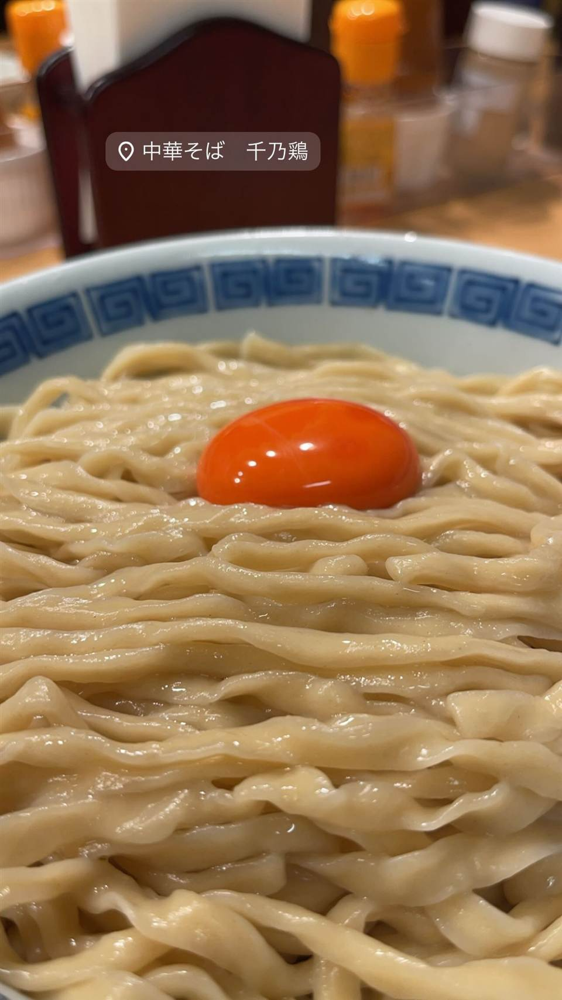

★ 推し醤油・中華そばで44位
中華そば 千乃鶏
下北沢「千里眼」の系譜、夜限定の釜玉油そばも人気
中華そば 千乃鶏
下北沢の名店「千里眼」が2022年に池尻大橋に開いたセカンドブランド。鶏ガラ・丸鶏・もも肉に昆布を合わせた上品な清湯スープの中華そばが看板で、夜限定の釜玉油そばも人気。

TRIVIA
へえ、という話
- 下北沢の名店「千里眼」の系譜を継ぐセカンドブランドとして誕生
- 夜限定の釜玉油そばは極太麺にチャーシュー2枚がのる大ボリューム
REVIEWS
みんなの声
92.252ラーメンDB3.70食べログ
「キレのある塩と鰹昆布水つけ麺」に注目
- まろやかさより鶏清湯ならではのキレの強い塩味を評価する声が多い
- 鰹昆布水つけ麺の食べ応えある平打ち麺の魅力を評価する声が複数ある
- 人気店ゆえ開店30分前でも並びができることもあるという声がある
ラーメンデータベース 口コミ119件・最新 2026-09
| 創業 | 2022年3月開業 |
|---|---|
| 系譜 | 下北沢の名店「千里眼」のセカンドブランド。 |
| 看板 | 中華そば／夜限定の釜玉油そば |
| こだわり | 鶏ガラ・丸鶏・もも肉に昆布と少量の豚骨を合わせた清湯スープ。本店「千里眼」よりあっさり上品な味わいに仕上げる。夜限定の釜玉油そばは極太麺に鶏油と醤油ダレ、濃厚な卵をからめた一杯。 |
| 掲載・受賞 | 日本経済新聞で「味の進化忘れぬ姿勢」として紹介された。 |
| どこから | 23区の外れ・近郊 |
| いつ行けるか | 行列 |
| 予算 | 昼 ¥1,000～¥1,999 夜 ¥1,000～¥1,999 |
| 場所 | 池尻大橋駅 東京都世田谷区池尻 |
| 注意 | 平日昼11:00-15:00・夜17:30-22:00、土日祝は通し営業、基本無休。 |
食べたもの：中華そば / 釜玉中華そば
NEARBY
近い店・同じ系統の店
-
 ★
スペイン料理 池尻大橋
ボラーチョ
店名は「酔っぱらい」の意味、深夜3時までタンシチューが楽しめる
夜 ¥5,000～¥5,999
★
スペイン料理 池尻大橋
ボラーチョ
店名は「酔っぱらい」の意味、深夜3時までタンシチューが楽しめる
夜 ¥5,000～¥5,999
-
 ★
醤油・中華そば 大口駅
中華そば 髙野
元美容師の店主が作る、昆布水に浸した自家製麺の中華そば
昼 ¥1,000～¥1,999 夜 ¥1,000～¥1,999
★
醤油・中華そば 大口駅
中華そば 髙野
元美容師の店主が作る、昆布水に浸した自家製麺の中華そば
昼 ¥1,000～¥1,999 夜 ¥1,000～¥1,999
-
 ★
醤油・中華そば 池尻大橋駅
八雲（やくも）
骨を一切使わないのに深いコクの特製ワンタン麺
昼 ¥501～¥1,000 夜 ¥501～¥1,000
★
醤油・中華そば 池尻大橋駅
八雲（やくも）
骨を一切使わないのに深いコクの特製ワンタン麺
昼 ¥501～¥1,000 夜 ¥501～¥1,000
-
 ★
醤油・中華そば 六本木駅
入鹿TOKYO 六本木店
鶏・豚・貝・海老を別々に炊く独自のカルテットスープ
昼 ¥1,000～¥1,999 夜 ¥1,000～¥1,999
★
醤油・中華そば 六本木駅
入鹿TOKYO 六本木店
鶏・豚・貝・海老を別々に炊く独自のカルテットスープ
昼 ¥1,000～¥1,999 夜 ¥1,000～¥1,999
-
 ★
醤油・中華そば 千歳船橋
中華そば 西川
永福町大勝軒などで8年修行した店主の煮干しそば、百名店5年連続
昼 ¥1,000～¥1,999 夜 ¥1,000～¥1,999
★
醤油・中華そば 千歳船橋
中華そば 西川
永福町大勝軒などで8年修行した店主の煮干しそば、百名店5年連続
昼 ¥1,000～¥1,999 夜 ¥1,000～¥1,999
-
 ★
醤油・中華そば 祖師ヶ谷大蔵駅
世田谷中華そば 祖師谷七丁目食堂
柴崎亭店主が手がける、煮干しと小豆島醤油の中華そば
昼 ～¥999 夜 ～¥999
★
醤油・中華そば 祖師ヶ谷大蔵駅
世田谷中華そば 祖師谷七丁目食堂
柴崎亭店主が手がける、煮干しと小豆島醤油の中華そば
昼 ～¥999 夜 ～¥999